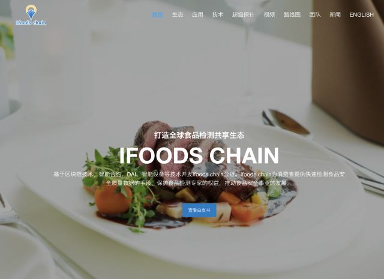
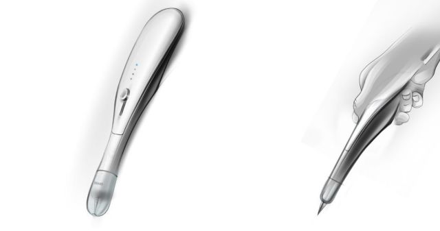

卡隆|如何用区块链解决溯源问题
2017.7.7
巨头入场，区块链落地食品领域的应用畅想。
本次分享嘉宾为区块链应用资深从业者卡隆: 2015年进入链圈，区块链+农业实验室发起人；Ifood Chain创始人，中国教育网络电视台区块链顾问。以第一发明人身份拥有多项区块链相关发明专利及软件著作权; 金融科技创新奖评委.
溯源是区块链的大场景之一。也是大家都看好的容易落地的应用场景
我个人从2015年开始带队做区块链食品安全溯源的项目开发，在开发的过程中，发现由于食品溯源是面向B端企业来做解决方案，区块链现在在企业端认知还比较浅，成本上来考虑也会比较多，市场培育需要一个过程。
同时溯源参与主体比较多，需要考虑的数据来源方很多，需要形成闭环保障可信数据上链，那么比较好的方式就是区块链+物联网来实现
区块链+物联网能够比较好保障可信数据上链，也有两个难题需要解决：1、物联网要全流程实施，会有操作难度；2、成本比较高，这个是相关行业企业在用区块链来操作的时候，就会有考虑。
如果做溯源，不用物联网来做，那基本上是虚的，大部分场景都不适用，还不如现有的溯源方式。食品溯源对资源和硬件实力要求都比较高，都是巨头在操作，比如，沃尔玛、IBM、京东、阿里。区块链做溯源并不是什么企业都能玩。
大家可以看下，鲸准研究院的区块链溯源报告，真正能做溯源的区块链企业不多，很多都是巨头，那么现在排第一的根源链和第七的Ifoods chain，都是我带队开发的。根源链是做面向B端企业的溯源，Ifoods chain是做面向C端的食品检测。
面向B端的溯源需要，我的判断是还需要时间来做市场培育，同时可操作性和成本降低也需要时间来推进。不过区块链发展太快了，Ifoods chain做一个能够给消费者直观判断食品品质的区块链智能硬件，通过消费者购买选择来推动食品品质的提升或许更迫切，

面对这么庞大的市场，有多个消费痛点及市场瓶颈需要通过区块链来解决，传统化食品安全质量检测方式难以满足检测专家、检测者、消费者的需求。比如：消费者食品相关知识不足；食品检测消费端缺乏信任；食品检测费用过高，计费支付方式中心化、个人难以长期承受；传统检测方式时间长、手续繁琐；食品检测供给端缺乏手段、科技创新；食品检测知识产权难以保护等等问题。
Ifoods chain的应用场景包括：智能硬件超极探针的食品检测及挖矿；分布式数据保护及价值传递；分布式食品检测网络及生态治理；分布式有机食品电商网络；而Ifoods chain的技术架构由中国千倍币缔造者NEO团队来自斯坦福的NKN创始人李彦博及trinity首席技术官张广峰联合领衔打造，作为应用于全球食品生态的公链性能肯定是世界前列了。

这是我们的超极探针的检测的原型图，和圆珠笔差不多大小，可以随身携带，60秒给出结果.对用户来说是很方便的
目前我们刚做完牛肉的检测数据库，猪肉检测数据库和鸡肉的数据库正在我们的食品大数据实验室解析，预计明年初猪肉的全球样本数据库能完成，鸡肉的全球样本数据库要到明年下半年。羊肉的还在寻找合作方，群里有相关，专业机构，也可以合作。
今年所有人都说是公链年，目前很多公链主网上线，包括今天EOS上线主网，其实做区块链应用场景开发也是同步进行的，食品领域始终缺乏信任，也是区块链最适合的场景，但是需要考虑的就是尽可能贴近用户
溯源离用户比较远，并不能助推消费者直观判断食品品质
去中心化的食品检测，让用户随时使用，是内在我们叫基因层的食品溯源。之前我们跟华大基金也在探讨，可以针对食品来开发相关基因检测技术，用户可以用到的
食品检测也有几个需要解决的问题，包括：检测时间要短、现场出结果、便于携带、成本低。
在区块链的基础上，在数据不可篡改、时间戳的基础上从易到难，比如：肉类注水、瘦肉精、细菌超标、激素、农残超标、抗生素、食品配方打假
包括我前段时间和中国人民公安大学，也在探讨，他们也有食品安全相关的科研机构，可视化现场化食品检测解决方案。不过区块链做食品检测 对单个创业创队的资源及技术要求太高，就需要大家来做共同推进。包括区块链底层、硬件、食品大数据、智能算法、标准制定等等
我们的食品检测是完全去中心化的，基础大数据库的牛肉全球数据库由我们林汝吉博士与科尔沁、品尚、中国检验检疫科学院南方检测中心一起探讨的解决方案，并做为基准，后面都是通过用户的检测的数据来进行算法优化
这个大概花了9个月时间做的
后面如果有更优化的数据库，也可以推翻这个数据库，在区块链世界里没有权威，一切都是用户来选择。目前我们自探讨的非接触细菌超标快测解决方案，是加拿大的一家科研机构做出来的，我们想让他们把解决方案数据库放到区块链上来，有很多的硬件企业做本地化方案，然后全球的用户都可以用上。
区块链做食品快检，是非常简单的快速的，并不能提供详细的数据库，也就是说，这是个判断题，对or错。专业检测机构做的解答题，需要给出非常详细的结果和指标，大家并不冲突。快检和深检互相补充，目前消费者并没有太多的协助做食品品质判断的工具，用区块链可以很好的弥补消费者的迫切需求。
我从2015年带队做区块链开发，第一个想要解决的就是数据上链前的确保数据可信和不可篡改，不算区块链本身性能的问题，联合开发的这里面就是坑也是比较多的，但是做出来了就是全球第一。
这些都需要大家一起来参与，为了确保食品安全，每个人都应该积极参与，创造数据，用区块链推动食品环境的改善，靠自己最靠谱。
问
答
跨链可以去ifoods chain做查询吗？
暂时还不行。
将来应该可以吧？
问题不大，我们有个合作方，trinity，就是做跨链技术的。
转发问题: 超级探针做食品检测的原理是什么？
通过智能硬件检测相关的数据上链，和我们基准数据库做比对，最后给出结果反馈到手机的Dapp里面 比如肉类是否注水。
智能硬件数据采集 > 蓝牙通过手机数据上链 > 在链上进行比对智能运算 > 反馈可视化结果到Dapp。
不能都做，很难，我们一家肯定是做不了，需要很多科研机构来合作，这方面会有比较好的激励方式
时间关系，今天的分享到此结束，再次感谢Kallon带来的区块链食品行业应用第一手资料。
初始数据我们会选择专业机构来提供，这需要大量时间和资金成本，但也无所谓保真的，最终都是用户数据来进行校对，如果偏离严重，那也可以大家投票来决策，有点类似超级节点投票